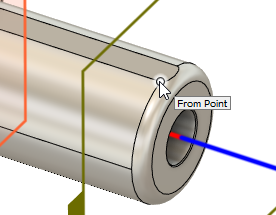

<div id="rotary_finishing_fromPoint"><p>モデル上の点をクリックして、ツールパスの角度制限境界の開始位置を指定します。</p>
<table class="tipTable" cellspacing="10">
<tr>
<td><center></center></td>
</tr><tr>
<td><center><p><b>開始点</b></p></center></td>
</tr></table>
</div>